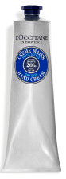

Крем для рук Карите 150 мл
Крем с высоким содержанием масла Карите (20%) заботливо питает и успокаивает кожу рук, защищая их от агрессивных факторов окружающей среды и одновременно восстанавливая защитный барьер. Специально разработан для сухой кожи рук. Несмотря на его густую текстуру, крем легко впитывается и дарит чувство мягкости и комфорта день за днем.
Спрей для волос
Деликатный уход и Баланс
Спрей защищает кожу головы и волосы от ежедневных внешних агрессоров (окисление, пыль, неприятные запахи и т. д.). Придает волосам блеск, эластичность и нежный аромат. Обогащенный пребиотиком, сохраняет естественное увлажнение кожи головы. Комплекс эфирных масел и активных ингредиентов для повышенной эффективности.
Масло для душа
Миндаль, семейный формат
Роскошное смягчающее масло для душа - уникальное средство по уходу за кожей, при контакте с водой образующее нежную пену. Богатое миндальным маслом и питательными липидами, оно смягчает кожу, сохраняя ее естественный баланс увлажненности. Подходит для всех типов кожи, как женщинам, так и мужчинам.
Концентрированное молочко
для тела Миндаль
Созданный на основе миндального масла, молочка и прессованного экстракта, молочный концентрат Миндаль подходит для всех женщин, нуждающихся в экстра разглаживании, придании упругости и плотности кожи тела. Его кремовая текстура тает на коже, оставляя на коже аппетитный аромат свежих миндальных орешков. Кожа смягчена и пропитана.